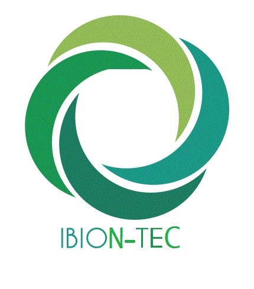

Faire rayonner le master
Représenter et promouvoir la formation IBION-Tec.
Depuis 2005,
la science nous rassemble.
Association étudiante du Master IBION-Tec, nous faisons grandir les idées, les rencontres et les projets au croisement des biotechnologies.
Créée en novembre 2005, Biotrace est l’association étudiante du Master IBION-Tec de l’Université de Montpellier. Au croisement de l’ingénierie biomoléculaire et des nanobiotechnologies, elle rassemble les étudiants autour de projets scientifiques et associatifs, favorise les rencontres et valorise la formation auprès des étudiants, des chercheurs et des professionnels.
Association loi 1901
Ingénierie BiomoléculaireDes générations d’étudiants, une même envie de partager les sciences.
Représenter et promouvoir la formation IBION-Tec.
Favoriser les échanges entre étudiants et professionnels.
Faire découvrir les avancées des biotechnologies.
Développer des projets collectifs et animer la vie associative.
Une équipe, quatre pôles, des projets plein la tête !
Les archives des équipes seront ajoutées lorsque leurs contenus seront disponibles.
Quand la matière rencontre le vivant. Deux jours pour explorer les biomatériaux et leurs perspectives.
Congrès scientifique organisé par les étudiants du Master IBION-Tec.
Découvrir le congrès →Faculté des Sciences
de Montpellier
Des découvertes, des projets et des moments à partager.
Le congrès du Master IBION-Tec consacré aux biomatériaux.
Faculté des Sciences de Montpellier
Toutes les informations →Nos ventes gourmandes sont aussi l’occasion de se rencontrer et de faire vivre les projets étudiants.
Prochaines dates et lieux à annoncer.
Suivre les annonces ↗Rencontres scientifiques, actions collectives, moments de cohésion : construisons la suite ensemble.
Échanger avec l’équipe →Les archives seront complétées avec les dates, programmes et médias vérifiés des anciennes éditions.
Congrès, stands et moments de vie associative.
Vous souhaitez participer à nos actions, proposer un projet ou en savoir plus sur l’association ? Écrivez-nous et échangeons !
Vous êtes chercheur, professionnel ou représentant d’une structure et souhaitez échanger avec notre équipe ? Contactez-nous pour discuter de vos idées et de nos projets.